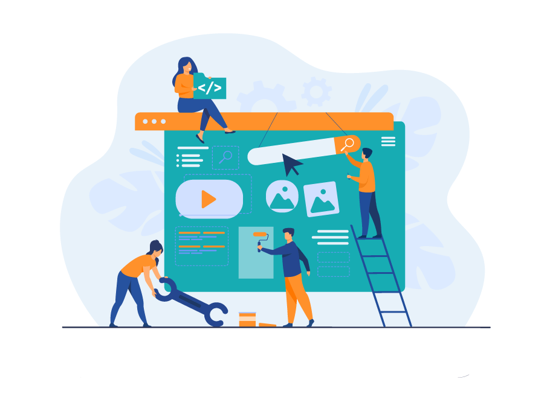

Marketing your website
Elements of Web Marketing:
- Have a Content Strategy. Your content should be:
- Findable: Make sure search engines can find the information (remember semantics?)
- Readable: Make sure your readers can esaily read through your content.
- Understandable: Don't use complex terms word and sentences that are too long.
- Actionable: Make sure there are call to Actions or ways of following up
- Shareable: Provide ways to share your content
- SEO - paid and organic
- Search Results
- Using Social Media to promote your page
- Collaborating with other websites and have other sites link to your website
- Create a good online reputation
- Email marketing
Findable Content:
- Use h1 for the page title and h2's to establish a hierarchy and organize the content.
- Use good metadata descriptions.
- Include links to the other pages and related content in your site.
- Include the alt tags in your images. That way they will appear on search engines as well. A picture of Sebastian can be used to promote the University by adding: "Sebastian, the University of Miami Mascot, opening the Canes Football season".
- Post your videos in social platforms to increase the views and lead traffic to your site, and include possible keywords in the title.

Readable Content:
- Use the Inverted pyramid style of writing and make sure your keywords are being used in the heading and main paragraph.
- Use chunking to keep paragraphs short.
- Bullets and numbered lists summarize ideas faster.
- Use consistent language in all your pages. If you use a term keep throughout the site. If you use the term "band" to talk about your music group, don't use "group" or "ensemble" in other places.
- Post your videos in social platforms to increase the views and lead traffic to your site, and include possible keywords in the title.

Understandable Content:
- If you have a complex topic, try to use a graphic or a photograph for support.
- Aim for at least an eigth grade level of understanding, unles your content is targeted specifically to a higher level and requires more complexity.
- Always provide context. Don't asume that people will know what you are talking about.
- Try to provide new information to your visitors, or express common ideas in a new way.
Actionable and Shareable Content:
- Include a Call to Action if appropriate.
- Make it easy for people to contact you or comment if not on your page, on social media..
- Can you offer some information on your site that can be useful to people? A tutorial, a document, infographic, recipe, etc. that people might want to keep and share.
- Provide a reason to share your content, or suggest it.
- Meke it easy to share your content.

SEO
SEO is the science/art of increasing your website’s visibility in organic search engine results.
Paid Search (Ads)

Organic Search
- Is how you come up in search results without paying.
- Use keywords, words and phrases your consumers would use when looking for your page. You won't be found under dog food if you don't use those words in your content.
- Make a list of the keywords and refer to it when writing your content.
- Always keep in mind that good SEO depends on good code, semantic use, content, page load.
- Tips for Organic SEO